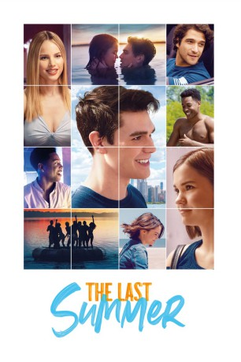
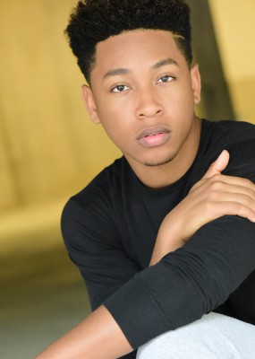
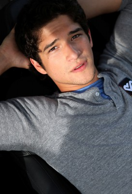
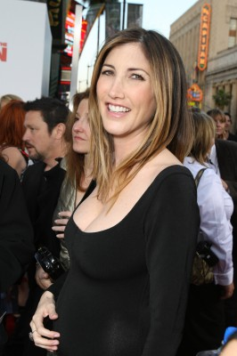
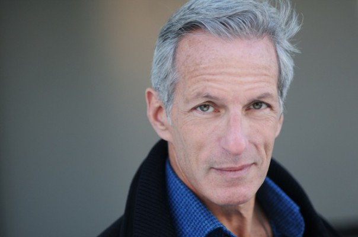
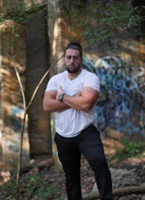

#11181 The Last Summer
 
 IMDB-Wertung: 5.6 / 10
IMDB-Wertung: 5.6 / 10  Metascore: 0
Metascore: 0 
Das Erwachsenenleben ruft und eine Gruppe von Freunden muss sich in ihrem letzten Sommer vor dem College den Herausforderungen alter und neuer Beziehungen stellen.
WEBHDRIP DUBBED
Jahr: 2019
Dauer: 109 Minuten
FSK:
Land: USA Studio: NetflixTonspuren: - , - , - , - , - ,
Untertitel: Deutsch, Englisch,
Auflösung: 1080p (1920x800) Größe: 4239 MB
Genre: Komödie
Regisseur: William Bindley
Drehbuch: Scott Bindley, William Bindley
Soundtrack: Ryan Miller
Darsteller:
- K.J. Apa als Griffin
- Maia Mitchell als Phoebe
- Norman Johnson Jr. als Mason
-  Jacob Latimore als Alec
- Wolfgang Novogratz als Foster
- Sosie Bacon als Audrey
- Mario Revolori als Reece
- Jacob McCarthy als Chad
 Halston Sage als Erin
Halston Sage als Erin-  Tyler Posey als Ricky
- Gage Golightly als Paige
- Nicole Forester als Margaux
- Audrey Grace Marshall als Lilah
- Valerie Jane Parker als Claire
- Sameera Rock als Janet
- Ed Quinn als Griffin's Dad
- Gabrielle Anwar als Griffin's Mom
- Heidi Johanningmeier als Phoebe's Mom
-  Jackie Sandler als Tracey
- Brenna Sherman als Sierra
- Greer Grammer als Christine Purdy
- Jamison Belushi als Promise Ring Girl
- Dylan Doornbos Hayes als Promise Ring Boy
- Collin Grubbs als Brother
- Amy Cates als Mrs. Robinson
- Christopher Mele als Older Trader Jerry
- Michael May als Mr. Edmonds
-  Jeffrey Grover als Paige's Dad
- Layla Cushman als Paige's Mom
- Ryan Edward Hill als Tyler
- Julia Kelly als Jordan
- Addyson Raley als Soccer Girl
- Ashleigh Morghan als Warehouse Party Girl
- Brianna Burke als Brenda Bonner
- Gabriel Vigliotti als Zachary
- Gloria Bishop als Skate Park Competition Fan (uncredited)
- Steve Boress als Baseball Fan (uncredited)
- Jenny Boswell als Erin's Grad Party Attendee (uncredited)
- Travis Bowen als Broker (uncredited)
- Brian Briggs als Erin's dad (uncredited)
-  Dominic Cancelliere als Skateboarder (uncredited)
- Lexi Cowan als Christine Purdy's Sister (uncredited)
- Emily Elder als Dancer (uncredited)
- Gary Flamik als Skateboard fan (uncredited)
- Ed Frame als Coffee shop patron background (uncredited)
- Bryan Geary als Guitar Shop Pedestrian (uncredited)
- Jenna Jaworski als Jogger / Partier / Roller Rink Patron (uncredited)
- Joe Morales als Cafe Patron (uncredited)
- Edlyn Sabrina als Train Passenger (uncredited)
- Melissa Santiago als Waitress (uncredited)
Datei: X:\2019(G-M)\Last Summer, The (2019, FSK, 1920x800).mkv seit 09.05.2019
Festplatte: HD 2018(G-Z)-2019(A-Z)
 Es gibt insgesamt 47 Filme in der Gruppe '2019(G-M)'
Es gibt insgesamt 47 Filme in der Gruppe '2019(G-M)'